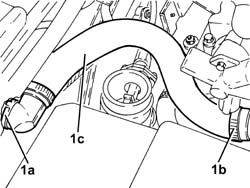
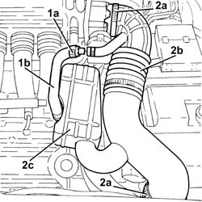
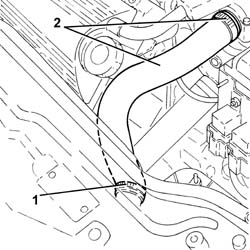
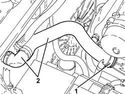
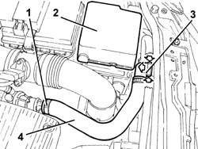

1088D14 UPPER SLEEVE FOR COOLANT INLET TO RADIATOR - R + R
- Path
- Procedures > 10 ENGINE UNIT > 1088 ENGINE COOLING > 1088D COOLANT HOSES AND SLEEVES > 1088D14 UPPER SLEEVE FOR COOLANT INLET TO RADIATOR - R + R
- Kind
- repair procedure (removal / refitting; the operation number is the code)
- Applies to
- all engines; all production periods
- Interactive page
- https://sloeber94.github.io/elrnDB-aGt/en/#/125001185
Applies to: engines: 2.0 JTS; all production periods
 Removing
Removing
 Refitting
RefittingProceed with removal
Op. 1016A40 IGNITION COIL COVER ON CYLINDER HEAD- R+R
Proceed with removal
1. Disconnect the rapid connector (1a), loosen the band (1b) and remove the radiator upper coolant inlet hose (1c).
Op. 1048A59 PIPE from flow meter to throttle casing hose - R.R.

Applies to: engines: 2.0 JTS; all production periods
Refitting
RemovingPlace the radiator upper coolant inlet hose back in its housing and fasten it using the band.
Proceed with refitting
Op. 1048A59 PIPE from flow meter to throttle casing hose - R.R..
Top up the engine cooling system
Op. 0010T20 COOLANT CHECK DENSITY AND TOP UP IF NECESSARY.
Proceed with refitting
Applies to: engines: 3.2 V6; all production periods
Removing
Refitting1. Loosen the band (1a) and disconnect the oil vapour recirculation pipe (1b) from the corrugated hose.
2. Loosen the bands (2a) and remove the corrugated hose (2b), complete with resonator (2c).

Applies to: engines: 3.2 V6; all production periods
1. Loosen the band and disconnect the upper coolant inlet hose to the radiator.
2. Loosen the band and disconnect the upper coolant inlet hose to the radiator, thermostat side and remove it.

Applies to: engines: 3.2 V6; all production periods
Refitting
RemovingPlace the radiator upper coolant inlet hose back in its housing, connect it and tighten the bands.
Place the corrugated hose, complete with resonator, back in its housing and tighten the bands.
Connect the oil vapour recirculation pipe to the corrugated hose and tighten the band.
Refill the engine cooling system with coolant
Applies to: engines: 1.9 JTD 16V; all production periods
Removing
RefittingPosition the vehicle on the ramp
Proceed with removal
- 1016A10 sound-proofing cover - r + r
Proceed with removal
Proceed with removal
Op. 7055B54 UNDER-ENGINE GUARD - R R
1. Loosen band and disconnect the upper coolant inlet hose to the radiator, thermostat side.
2. Disconnect the rapid connector for the upper coolant inlet hose to the radiator, radiator side, and remove it.
Op. 1048A23 COLD AIR INTAKE - R R

Applies to: engines: 1.9 JTD 16V; all production periods
Refitting
RemovingRefit the upper radiator coolant inlet hose and connect the rapid connector to the radiator.
Connect the upper coolant inlet hose to the radiator, thermostat side, and tighten the band.
Proceed with refitting
Op. 1048A23 COLD AIR INTAKE - R R.
Refill the engine cooling system with coolant
Op. 0010T20 COOLANT CHECK DENSITY AND TOP UP IF NECESSARY.
Proceed with refitting
Op. 7055B54 UNDER-ENGINE GUARD - R R.
Proceed with refitting
- 1016A10 sound-proofing cover - r + r
.
Remove the car from the ramps.
Applies to: engines: 1.8 T.SPARK; all production periods
Removing
Refitting1. Disconnect the upper coolant inlet hose to the radiator, thermostat side.
2. Remove the relay/fuse box cover.
3. Disconnect the upper coolant inlet hose to the radiator, radiator side.
4. Remove the upper coolant inlet hose to the radiator.

Applies to: engines: 1.8 T.SPARK; all production periods
Refitting
RemovingPlace the radiator upper coolant inlet hose back in its housing and connect it to the radiator and to the thermostat.
Place the relay/fuse box cover back in its housing.
Refill the engine cooling system
Op. 0010T20 COOLANT CHECK DENSITY AND TOP UP IF NECESSARY
.